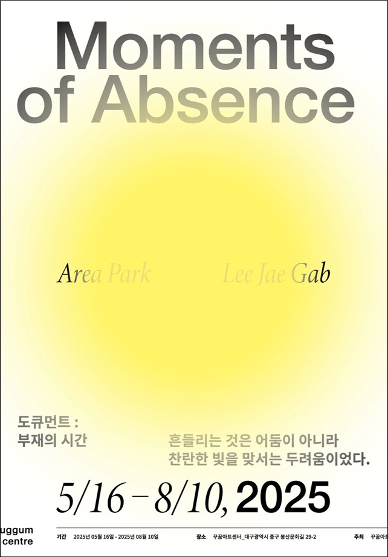

Moments Of Absence
도큐먼트 : 부재의 시간
2025.05.16 ~2025.08.10
개관프리뷰 두 번째 기획
'도큐먼트: 부재의 시간'
Moments of Absence
흔들리는 것은 어둠이 아니라,
찬란한 빛을 맞서는 두려움이었다.
전시: 2025년 05월 10일 - 08월 10일.
박진영, 이재갑
Area Park, Lee Jae Gab
독립적이고 자유로운 동시대 문화예술 공간
꾸꿈아트센터
대구광역시 중구 봉산문화길 29-2
